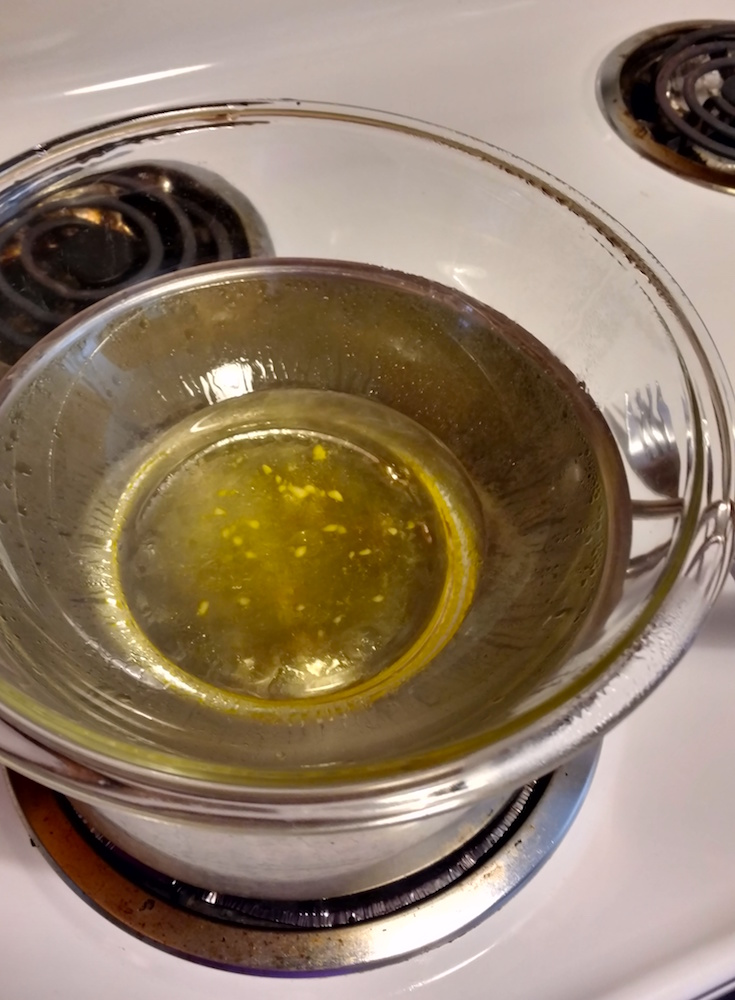
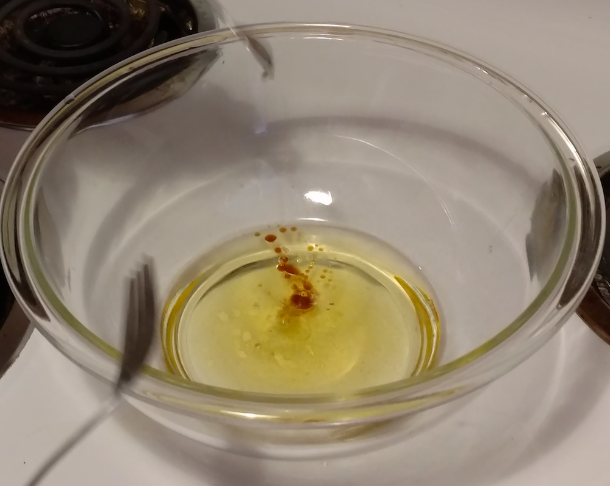
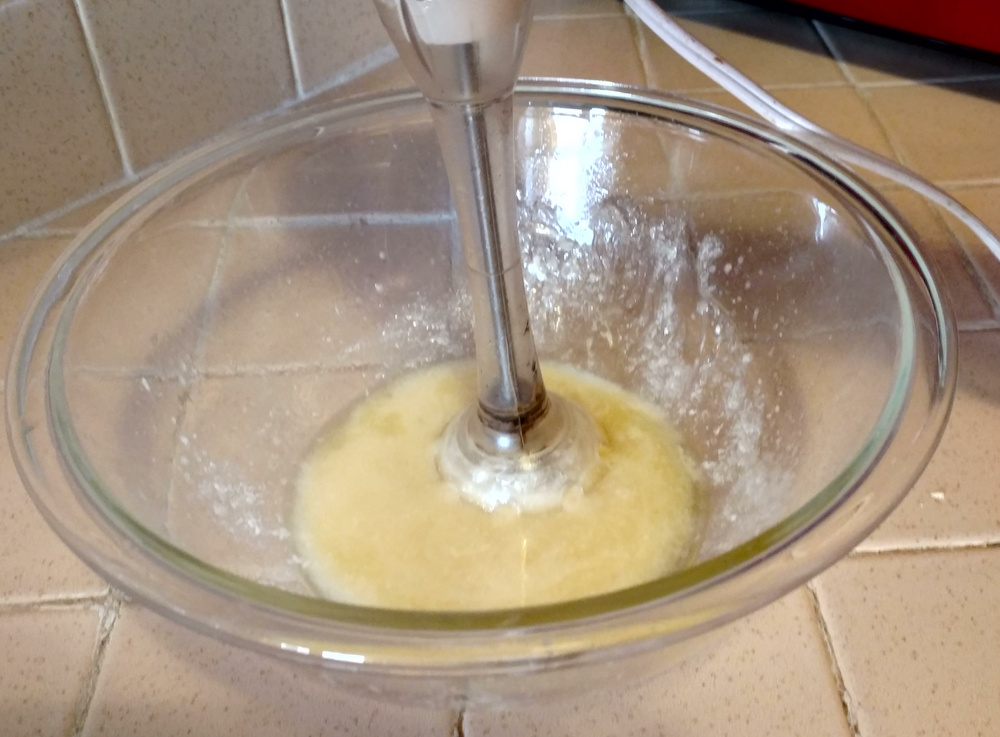
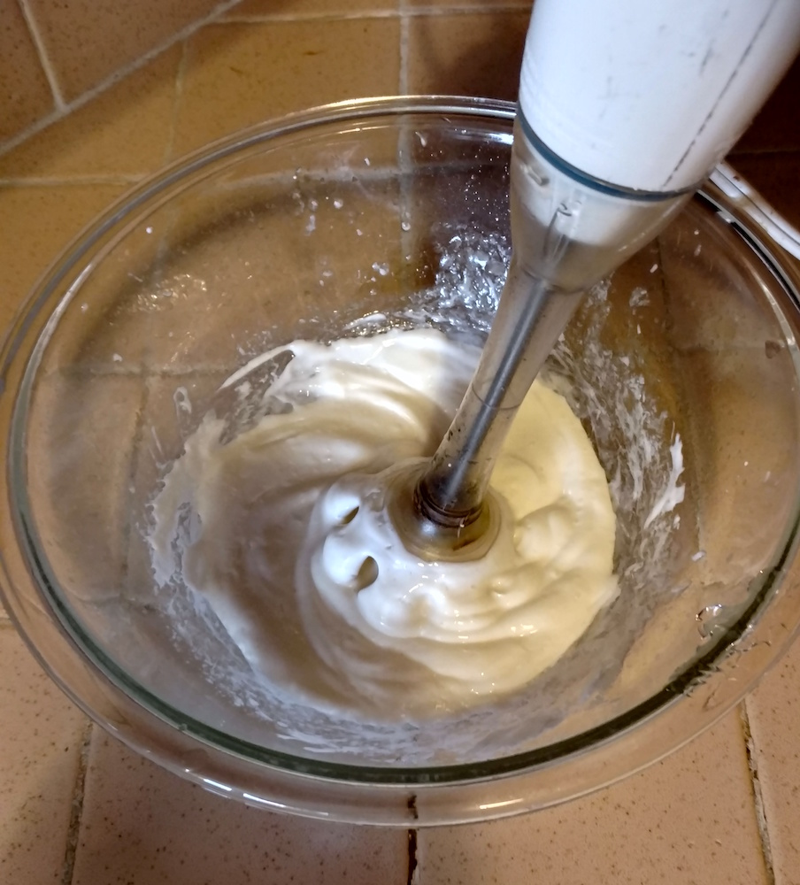
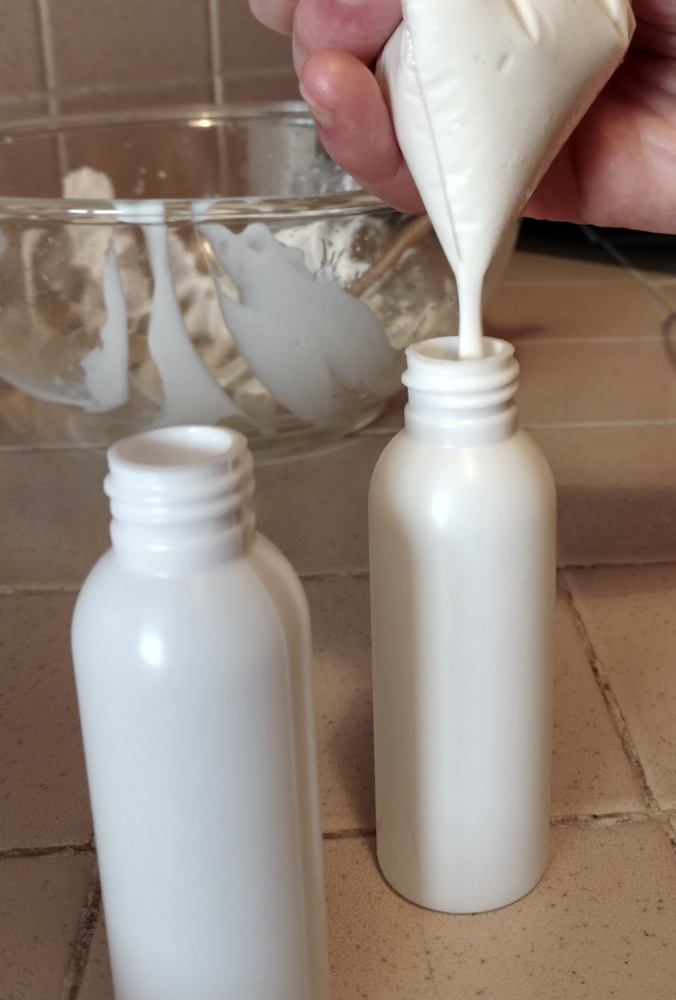

The recipe below is adapted from a vanilla body lotion recipe on Healthy Living How-To. Other helpful resources include a nice list of 5 basic recipes from The Little Pine, as well as a post from Great Cakes Soap Works about troubleshooting your lotion, which talks about how each ingredient affects the end result.
Why make lotion?
You probably already have a reason if you are reading this at all! So, you do you. That said, one of my motivations was to support the fragrance-free movement by using a low- or no-scent lotion, in effort to not make people around me sick. (As a caveat, this lotion is actually pretty smelly, even though the smells aren't explicitly engineered to be smells, so I often don't wear it around fragrance-sensitive people. Also, everyone's sensitivities differ, so this lotion may or may not be okay for a given person. See the variations below for how to make a more scentless option.)
Most of the recipes I read also included some version of the idea that commercial lotions (or generally body products, or possibly all products), are full of toxic additives that are bad for your health, and so making your own version helps avoid these effects. I seem to be a weirdo for being skeptical about this theme while simultaneously believing the thing about fragrances giving people seizures. I'll try and write more about this in a later post.
And if none of that gets you going, you can make lotion because it's fun, cheap, and customizable. Also, it's cool to know how to do things! It makes the world less mysterious, and makes it easier to figure out even more things.
I got the almond oil and cocoa butter on Amazon, and the rest at Trader Joe's and QFC, but you could go wherever. Leah Lakshmi's blog—also linked above—has a lot of other helpful info and a great list of where to get things (under PRODUCTS heading, search for "Note:", about 1/3 of the way down the page).
Steps
Heat the almond oil, cocoa butter, and coconut oil. I use a double boiler made from a pot with about an inch of water in it, with a pyrex bowl set on top. You could use an actual double boiler, a microwave, a blowtorch, etc.
Stir occasionally until the cocoa butter and coconut oil have dissolved completely.A bit more melted than this
Remove from heat and stir in the vanilla extract.
With a blender, immersion blender, or really strong whisking hand, whisk in the aloe vera, adding gradually until it looks like lotion.Looks soupy and weirdLooks like lotion!
To put the lotion in bottles without making a huge mess, I scoop the lotion into one corner of a sandwich bag. Next, make it a piping bag by cutting a tiny corner off, then squeeze it into the bottles through the hole.
That's it! Wipe excess lotion from bowl, blender, etc onto your skin or a paper towel before cleaning with soap and water (otherwise it might clog the drain.) Store in the fridge for a couple months, or at room temperature for a couple weeks.**
Substitute shea butter for the cocoa butter, and one or two drops of tea-tree oil (cheap-ish at Trader Joe's) for the vanilla extract.
For even less of a scent, omit the tea-tree oil and use refined coconut oil which is less smelly.
Rumor has it you can make your own sunscreen by adding zinc oxide, if you're into that sort of thing.
**Notes on storage
This lotion contains water (in the aloe), and no preservatives, which meansthat tiny organisims that are not necessarily good for you will enjoy growing in it. Use it up before that happens! You can make lotion with only oil-based ingredients to avoid this problem, but it can still go rancid. It helps to keep the ingredients in a cool, dry place. Also, use clean hands, dishes, and utensils while making the lotion.